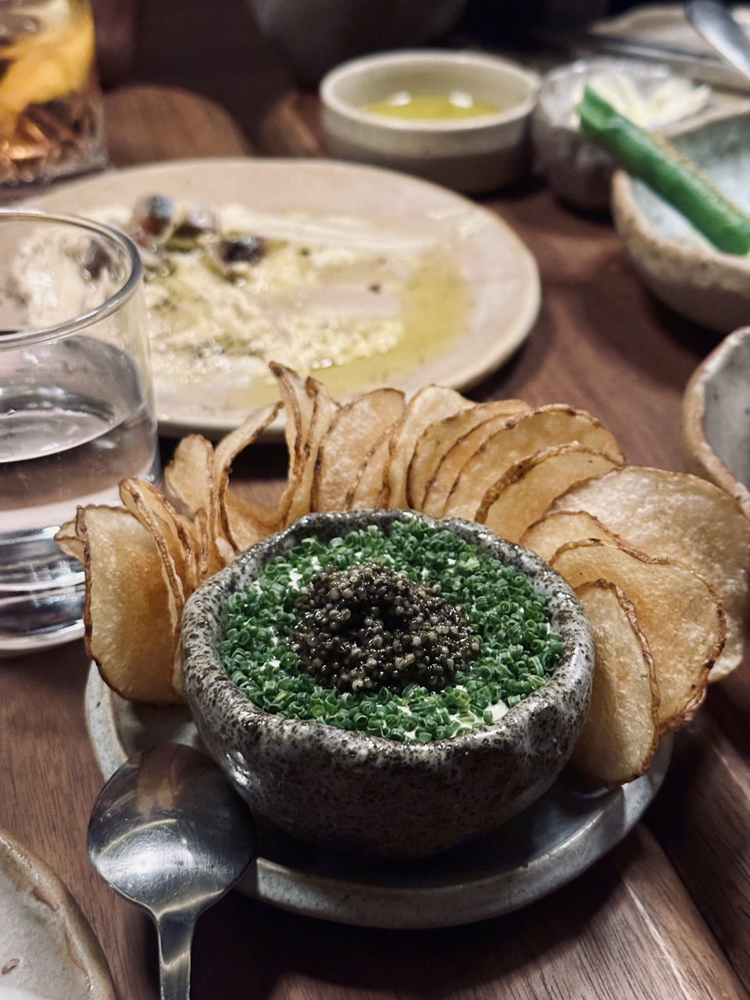

print(x)[1] 1Hello, my name is Keerthana, but most people call me Keer, I guess my name is a little tough to pronounce üòÖ. I‚Äôm turning 23 this year and‚Ķ damn, I feel old.
I was previously a student at Ngee Ann Polytechnic where I studied Information Technology. I took a slightly longer route of four years in polytechnic because I came from the Normal Academic stream in secondary school and entered via the Polytechnic Foundation Programme (PFP).
Now, I’m pursuing a degree in Computing Science.
“I feel like it’s a mistake though…”
I often wonder if Software Engineering would’ve been a better fit because I love building things more than solving math equations BOOOO. Oh well…
I want to be a developer. I’m almost certain about that. I just don’t know what I want to build yet, but I know I want it to be useful and meaningful to the world.
However, I do struggle with this:
“What is meaningful to me? How do I cope when a task doesn’t feel meaningful?”
During my IWSP interview, I was asked why my grades weren’t the best. I admitted that math-heavy modules just don’t interest me, even though they’re foundational in Computing Science.
It’s something I’m still working through.
Some ways I like to spend my free time are:
For my 21st birthday, I gifted myself a solo trip to Japan üáØüáµ. I spent 16 days wandering through beautiful places and my favorite was Nikko.
I visited Takayama and had my first onsen experience too.
The mineral-rich waters of the Takayama onsen improved my circulationfast and soothed my jointstired after a long journey.
I also traveled to Korea with my mom and saw snow for the first time! Highlights included:
A trip that I’m looking forward to is a trip after my OIP where I’ll be going to Switzerland and Norway.
Once I ate something at Le Bon Funk, a restaurant in Singapore which had 3 components to it.
I tried to recreate it and I think I did a pretty good job.
PS: I am a vegetarian and usually caviar is served ontop of the dip instead of tonburi. Tonburi is also known as “caviar of the field”

But ultimate favoruite cuisine is Asian food. As I don’t consume meat, I find ways to enjoy local favourites like Mee Rebus and Lai Yao Kai and other meals made meatless. Most of my inspiration comes from my grandma and mom.

Not a movie buff but I like shows and my favorite show right now is House MD. Gregory House says:
It’s a basic truth of the human condition that everybody lies.
print(x)[1] 1library(ggplot2)
data(mpg)ggplot(data = mpg, aes(x = displ, y = hwy)) +
geom_point()Conclusion:
The scatter plot shows that as engine displacement increases, highway miles per gallon tends to decrease. This suggests that larger engines are generally less fuel-efficient.
Likes and Dislikes:
Like: The plot clearly shows the relationship between engine displacement and fuel efficiency.
Dislike: The points are all the same color, making it less visually engaging.
Improvement: Add color to differentiate points by vehicle class, e.g., aes(color = class).
ggplot(data = mpg, aes(x = manufacturer))+
geom_bar() +
labs(
title = "Number of Vehicles by Manufacturer",
x = "Manufacturer",
y = "Count"
)Likes and Dislikes:
Like: The bar chart effectively shows the distribution of vehicles by manufacturer.
Dislike: Overlapping X-axis labels – The manufacturer names overlap and reduce readability. The colors are monotoned as well.
Improvement: Rotate the x-axis labels for better readability
Felt like it was a Jupyter dupe initially but one thing I learned from today’s lab is how to use Quarto to create interactive HTML documents that combine formatted text, code, and visualizations. This stood out to me because I realized how powerful Quarto can be in creating professional, reproducible reports that are easy to share and interpret, especially in data analysis and visualization contexts.
I initially found the different code chunk options (echo, eval, include) a bit confusing, as it wasn’t immediately clear how each one affected the output. After experimenting with each option, I now better understand how they control whether code and output are shown in the final document.
I used ChatGPT to fine-tune chunk options for better presentation. It helped speed up the learning process and served as a reference when I was unsure about syntax or formatting.
This exercise was a great hands-on introduction to Quarto. I also like this lesson style where we have time to work on the lab in class. It allows us to engage with the prof directly and ask questions immediately as she walks around the lab class.